Maldives ISLAND
The Maldives is an ideal destination for lovers of luxury spa resorts and divers, as it is one of the
most beautiful places to spend a honeymoon, as it is characterized by its isolated beaches and enchanting blue waters.
The Maldives is an ideal destination for lovers of luxury spa resorts and divers, as it is one of the
most beautiful places to spend a honeymoon, as it is characterized by its isolated beaches and enchanting blue waters.

One of the largest tourism resorts in the Maldives, overlooking one of the island's wonderful beaches and allowing its visitors to enjoy various sports such as diving, beach ball, surfing and other water sports that make you enjoy your vacation on the island to the fullest.
Addo is located in the south of the country and is the second city after the capital of the Maldives, Malé, as an important economic and administrative center for the country. It is considered the best place for tourists to visit the rest of the Maldives.
One of the most beautiful islands in the Maldives. It is located in a secluded area on the northeastern side of the North Male Atoll. It is an ideal destination for diving enthusiasts, as there is a diving school that provides all the equipment necessary for an enjoyable diving trip. There are several luxurious restaurants on the island, and you can watch dolphins swimming in The blue water that surrounds the island.
Many consider it the first island of the Maldives. It is one of the most beautiful islands of the Maldives for honeymooning, as it enjoys crystal clear water and white sand on the beach, and its sun is shining throughout the year.
Geographical features are one of the unique points of the Maldives, and the possibility of scattering guests across its different islands was tempting for travelers, and this meant the ease of applying social distancing measures, as the destination was promoted as a safe haven for tourists
this site for training online and sport nutrition we help you to loss weight or gain weight for better life and we wish that you will support this web
this site for training online and sport nutrition we help you to loss weight or gain weight for better life and we wish that you will support this web
 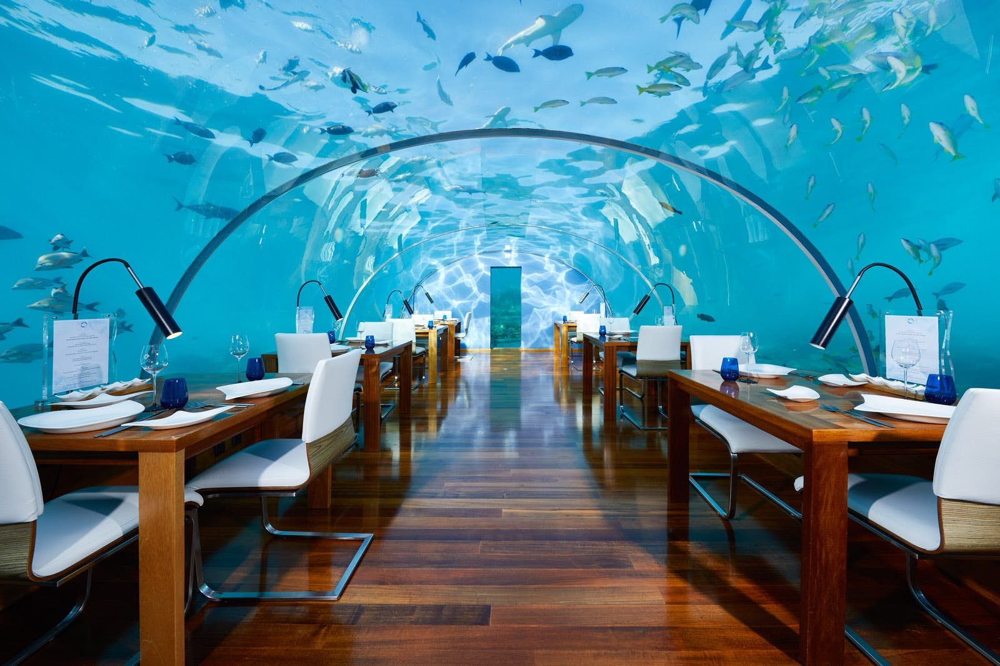
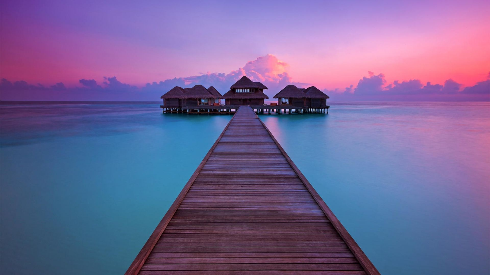
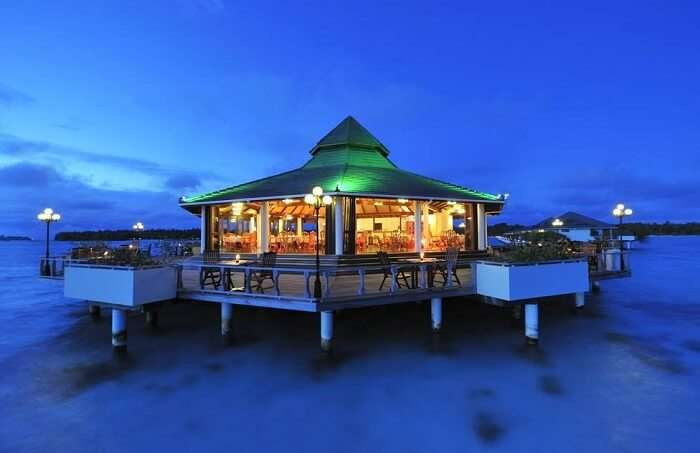
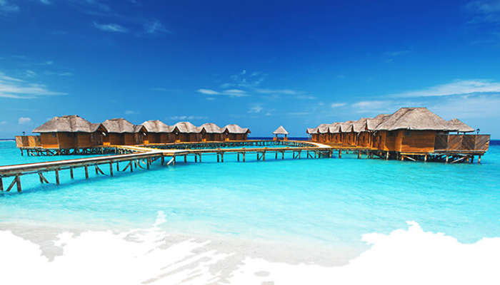
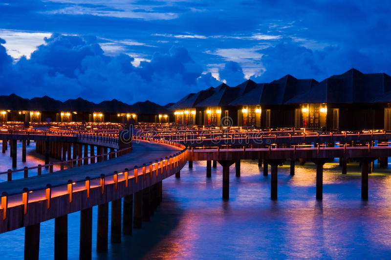
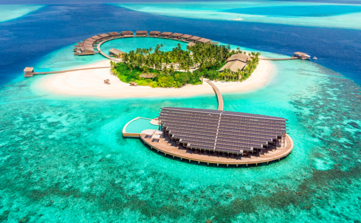
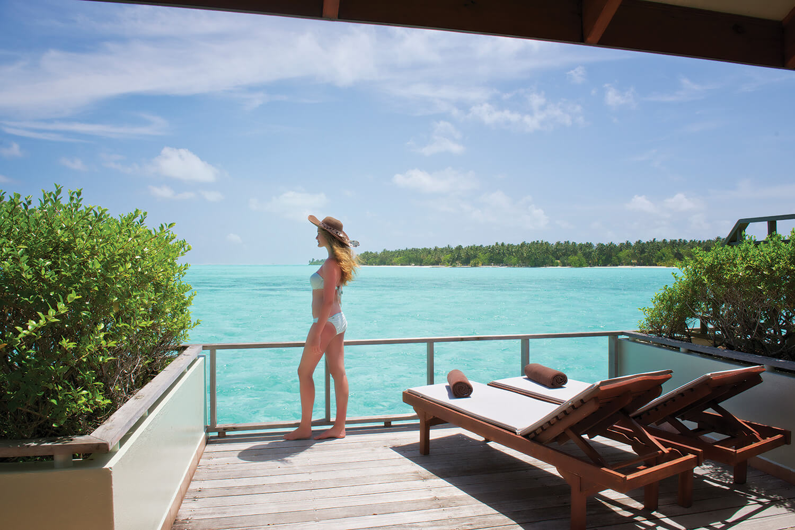
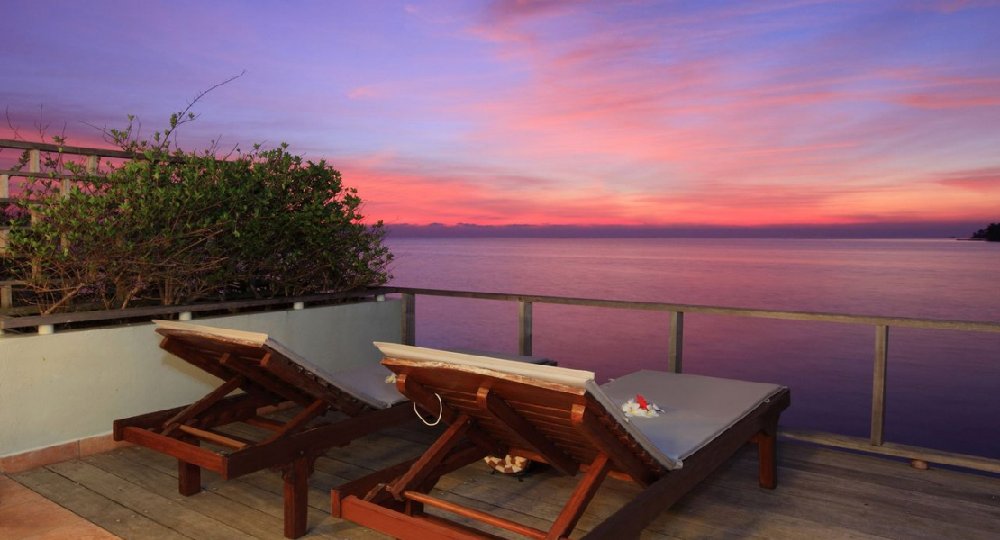
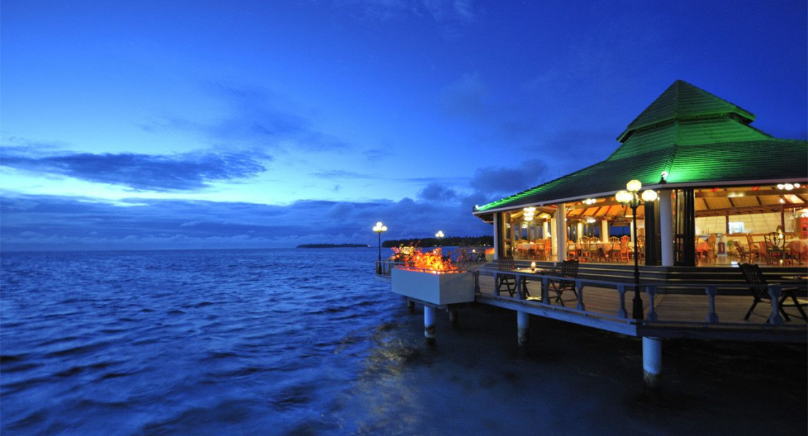
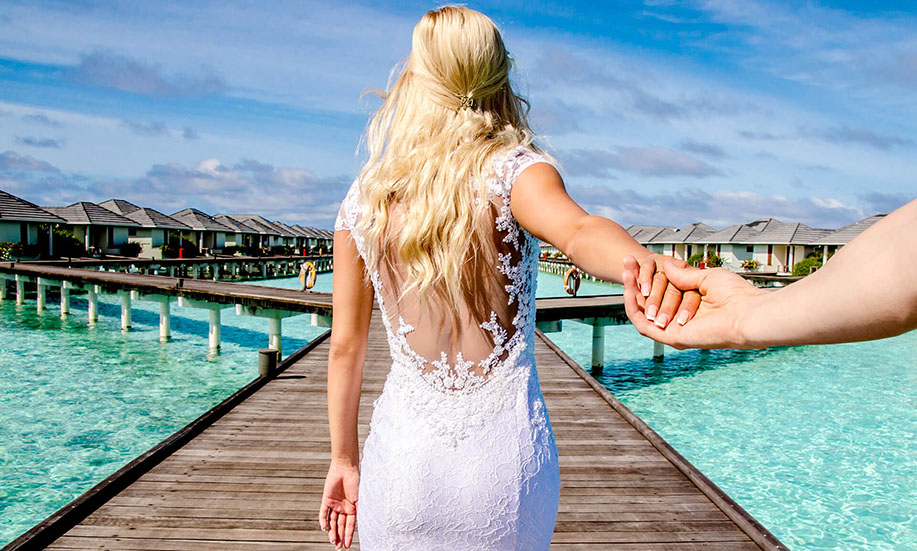
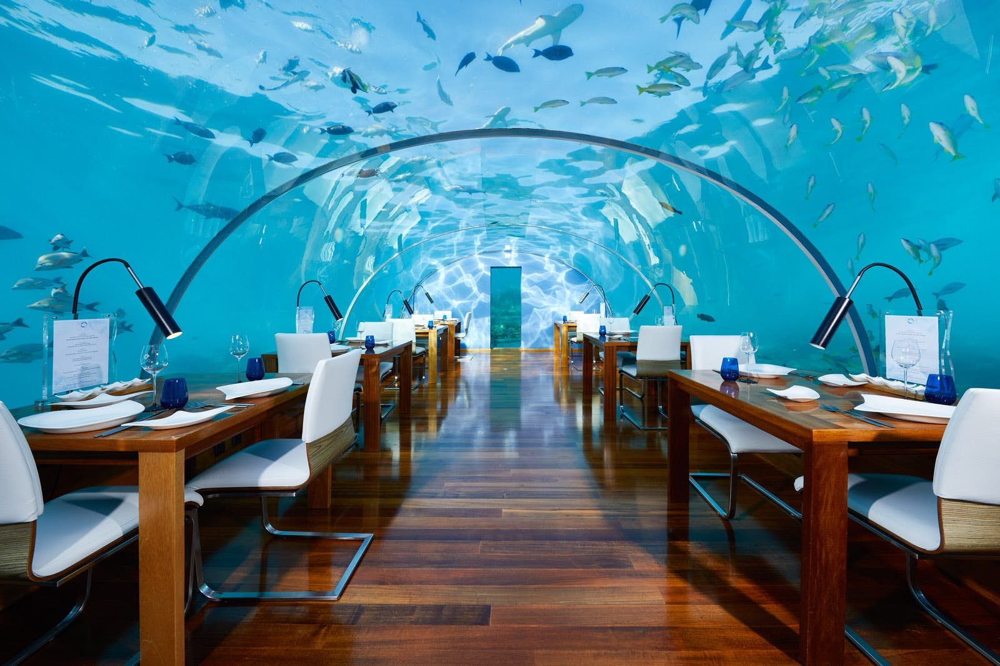
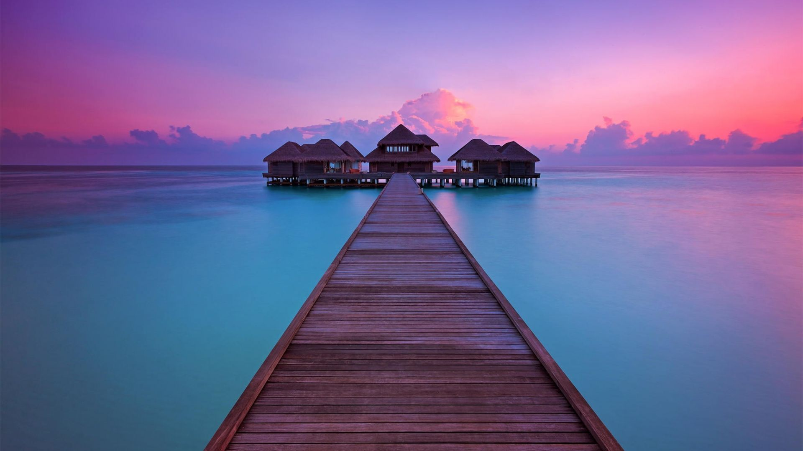
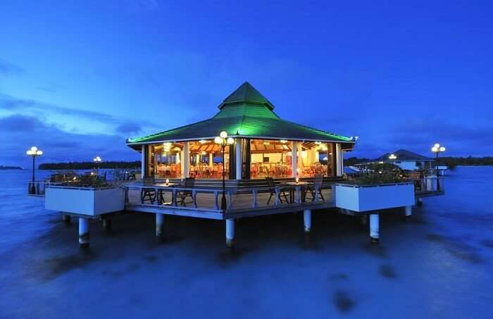
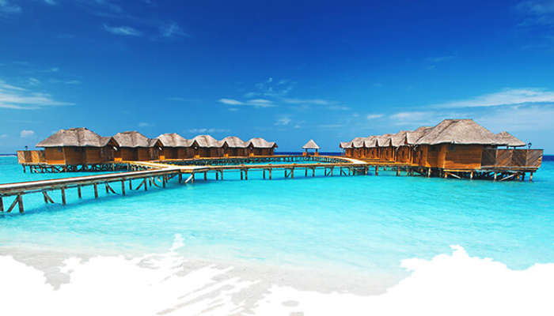
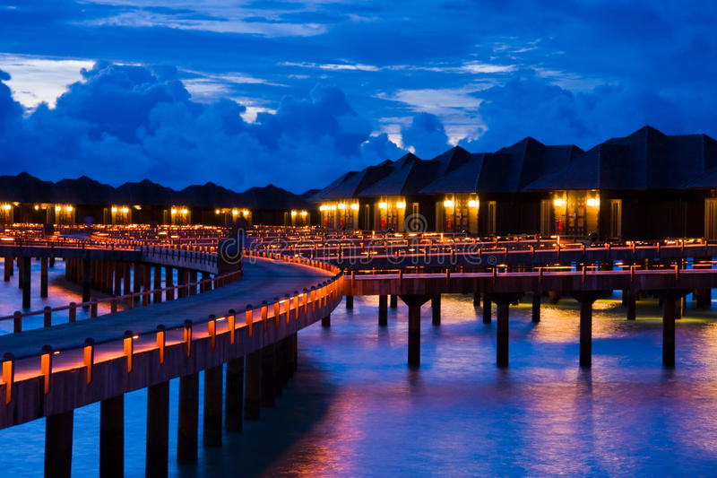
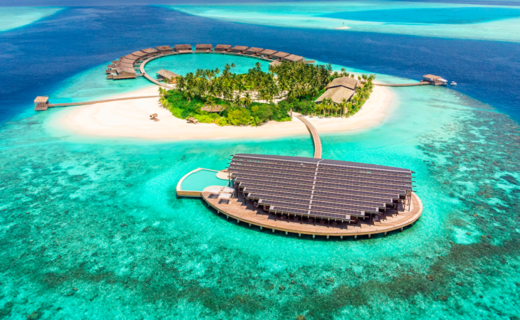
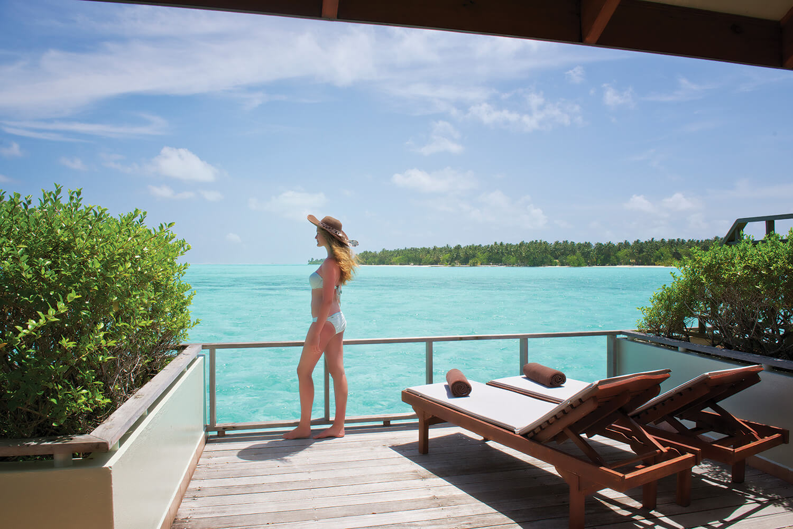
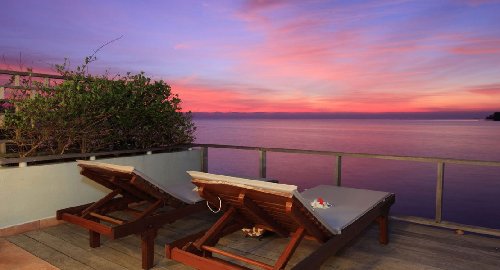
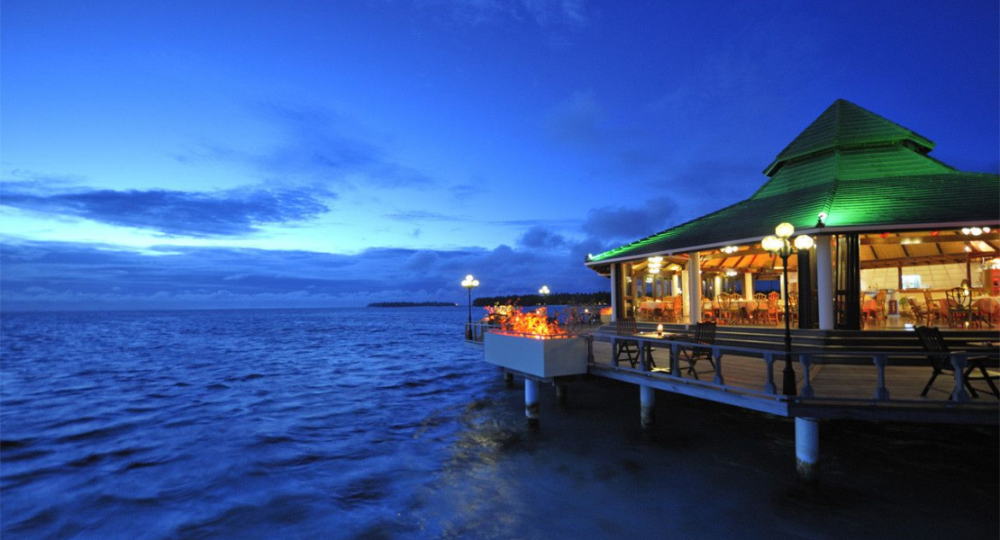
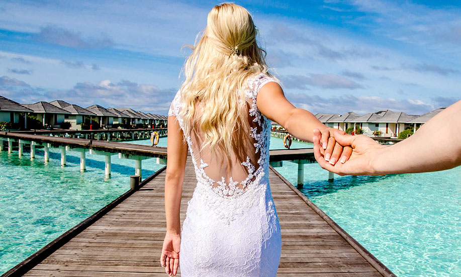